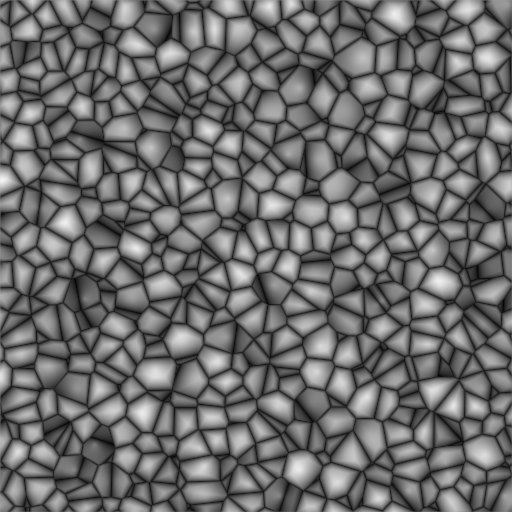

简介¶
{kind=link}
Procedural textures are textures that are defined mathematically. They are generally relatively simple to use, because they do not need to be mapped in a special way - which doesn’t mean that procedural textures cannot become very complex.
These types of textures are ‘real’ 3D. By that we mean that they fit together perfectly at the edges and continue to look like what they are meant to look like even when they are cut; as if a block of wood had really been cut in two. Procedural textures are not filtered or anti-aliased. This is hardly ever a problem: the user can easily keep the specified frequencies within acceptable limits.
These are the available types:
Common options¶
Noise Basis¶
Each noise-based Blender texture (with the exception of Voronoi and simple noise) has a Noise Basis setting that allows the user to select which algorithm is used to generate the texture. This list includes the original Blender noise algorithm. The Noise Basis settings makes the procedural textures extremely flexible (especially Musgrave).
The Noise Basis governs the structural appearance of the texture :

Blender Original. |

Voronoi F1. |

Voronoi F2-F1. |

Original Perlin. |

Voronoi F2. |

Voronoi Crackle. |

Improved Perlin. |

Cell Noise. |
|

Voronoi F4. |
{kind=link}
{kind=link}
There are two more possible settings for Noise Basis, which are relatively similar to Blender Original: Improved Perlin and Original Perlin
Nabla¶
Almost all procedural textures in Blender use derivatives for calculating normals for texture mapping (with as exception Blend and Magic). This is important for Normal and Displacment Maps. The strength of the effect is controlled with the Nabla Number Button.
Hints¶
Use the size buttons in the Mapping panel to set the size that the procedural textures are mapped to.
Procedural textures can either produce colored textures, intensity only textures, textures with alpha values and normal textures. If intensity only ones are used the result is a black and white texture, which can be greatly enhanced by the use of ramps. If on the other hand you use ramps and need an intensity value, you have to switch on No RGB in the Mapping panel.